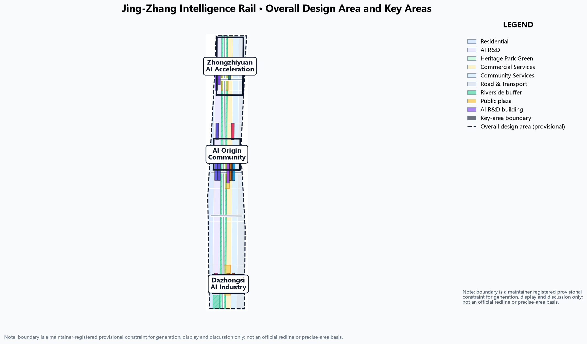

Coordinated research 43.6 km²
AI ecosystem, three-areas-two-wings synergy, future city form and culture.
- Innovation and talent chains
- 6 global case references
- Branding and outreach
Offline presentation. Authoritative data remain in GeoJSON, metrics.json, matrices and self-check results; this page translates the overview map, three-level scope, key areas, land use, mobility, blue-green network, building renewal, AI scenarios, core metrics, task coverage, self-check state, sources and assumptions into a readable visual explanation.
Land use, memory-track greenbelt, mobility, building renewal and AI scenario nodes in one evidence map.

Coordinated research, overall design and key detailed-design areas.
AI ecosystem, three-areas-two-wings synergy, future city form and culture.
Renewal framework, land use, transport-municipal, heritage park belt.
Detailed design of the three intelligent-rail stations.
Each key area has industry positioning, spatial strategy, AI scenarios and implementation risk.
Full-stack self-reliant innovation: compute training, model evaluation, standards.
Near-campus conversion: open-source plaza, incubator blocks, talent housing.
Intelligent terminals and content consumption: data factors, station-city integration.
Six concept land-use categories fully cover the design area without gaps or overlaps.
Training-validation and open-source innovation at the three stations.
Memory-track greenbelt and riverside buffer.
Dazhongsi smart consumption and industry services.
Memory-track slow spine, east-west stitching mouths and rail integration.
Continuous footpaths and cycleways, accessibility first.
Micro-circulation and feeder around the three stations.
Wudaokou, Qinghua East Road West, Dazhongsi station links.
Green and plaza network supporting daily interaction and AI experience.
North-south through, linking the three stations.
Zhongzhi, Origin, Dazhongsi public living rooms.
Qinghe blue-line ecological buffer.
Concept footprints and the renewal project list.
13 concept renewal footprints expressing retain-renovate-demolish magnitude, not floor-area commitments.
JZ-01 to JZ-06 project types.
Regulatory controls, ownership, existing buildings pending official data.
10 scenario cards and 3 test/validation scenarios, each with privacy boundaries and human review.
Memory-track demo section.
Three stations.
Greenbelt crossings.
Open-source station.
Manufacturing station.
Application station.
Education band.
Zhongzhi Signal Tower.
Community nodes.
Rail stations.
compliance_matrix.json covers announcement 1.3/1.4/1.5 and agent.1-agent.6.
See sources.json, agent_taskbook.json, data/processed/agent_fact_pack.md and standards/references. This page loads no CDN, remote tiles, external scripts or APIs.
Pending regulatory controls, redlines, ownership, municipal, heritage and engineering conditions are listed in assumptions.json.